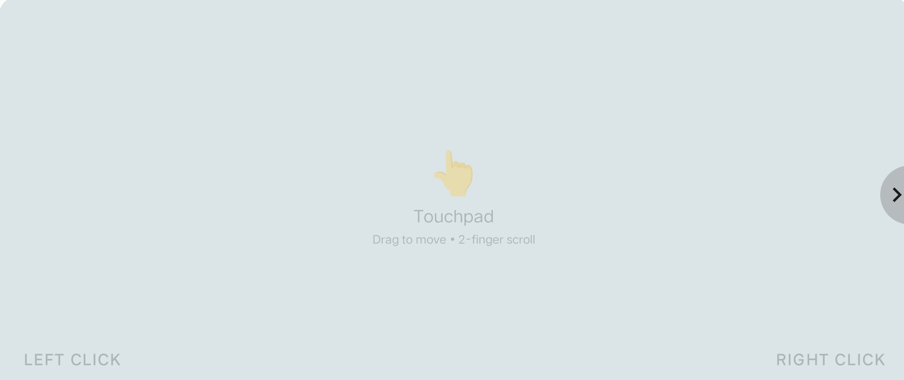
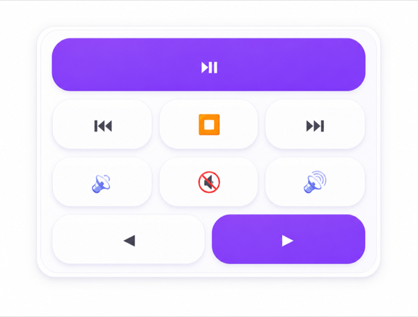

Responsive Touchpad
Turn your phone into a smooth, responsive trackpad for precise, seamless control.

TrackPoint
A precise, minimalist pointer inspired by classic keyboard design. Engineered for absolute pixel-perfect accuracy.
Smart Shortcuts
Create custom macros and shortcuts, stringing complex commands into single taps to rapidly boost your productivity.
Keyboard Modes
Type comfortably with layouts that adapt instantly to any orientation—portrait or landscape—without interrupting your workflow.

Media Widget
Essential controls, always within reach. Access playback commands directly from your home screen.

Media control
Navigate presentations and playback precisely without breaking your flow or leaving your audience's gaze.
Personalized Setup
Fine-tune pointer speed, scroll acceleration, and click sensitivity to perfectly match your unique tactile style.
File Sharing
Quickly beam files seamlessly between your devices without internet reliance or cloud hassle.
Clipboard Sync
Copy text on phone and paste it on PC across the workspace.
Seamless Connect
Fast, low latency Bluetooth pairing every single time. Your setup reconnects instantly directly upon proximity.